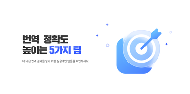

 기술 2025년 1월 10일 • 12분 읽기 번역 정확도를 높이는 5가지 팁 더 나은 번역 결과를 얻기 위한 실용적인 팁들을 공유합니다. 전문가들이 사용하는 방법들을 알아보세요. 더 읽기
튜토리얼 2025년 1월 12일 • 8분 읽기 첫 번째 자막 만들기 가이드 AX2를 사용하여 영상 자막을 만드는 방법을 단계별로 알아보세요. 초보자도 쉽게 따라할 수 있습니다. 더 읽기